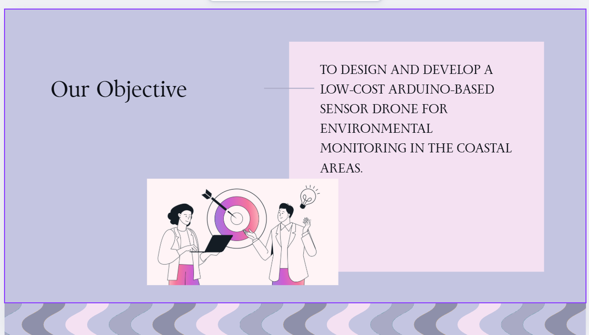

Project Objective
Design an affordable sensor and drone system that can be used by students and researchers to collect environmental data (temperature, humidity, air quality, water quality, soil conditions) around beaches — without needing expensive commercial hardware.
High-level objective slide from the project deck.